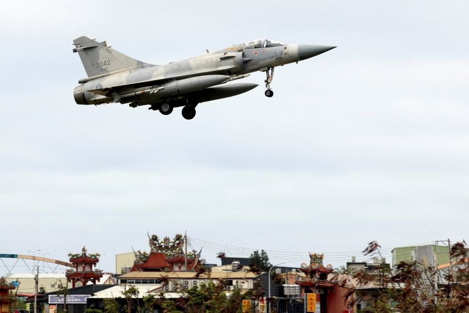

深度x開放x非營利
電子報
贊助
最新
深度專題
國際兩岸
人權司法
政治社會
醫療健康
環境永續
產業經濟
文化生活
教育校園
評論
何明修／奶茶聯盟的台灣觀點
評論
2025《報導者》與《少年報導者》年度回顧
評論
黃丞儀／台灣民主的潘朵拉盒子──憲法法庭面臨的正當性危機
影像
2025《報導者》年度照片選集：不協和音
國際兩岸
3年半第7次圍台軍演：歷來最嚴重海空交通干擾，反映中國哪些武嚇目的？
人權司法
你今天踩到洩密紅線了嗎？
政治社會
全台圓環大體檢（上）：哪些圓環頻傳傷亡事故？癥結怎解？
國際兩岸
3年半第7次圍台軍演：歷來最嚴重海空交通干擾，反...
「正義使命2025」軍演，是中國自2022年藉裴洛西訪台、報復性發動軍演後，過去3年半來的第7次「圍台」演習。劃...

政治社會
憲法法庭重啟，《憲訴法》部分修正條文違憲失效；5名大法官開會參與評議，3名大法官未開會並私下提不同意見書
專題．詐欺海嘯侵蝕司法防線
詐欺案海嘯，如何侵蝕司法防線？
曾以打擊犯罪為榮的檢察官，在詐騙洪流中沒頂、出走；被賦予維護人權使命的律師，則因為少數跨越職業倫理的同業， 使白袍蒙上「詐團共犯」陰影。詐騙犯罪除威脅民眾身家財產，也正在侵蝕法治制度的根基。
專題．詐欺海嘯侵蝕司法防線
當法律守門人墮入共犯結構──不肖律師如何遊走灰色地帶，成詐團廉價工具
近來不斷有律師因涉及替犯罪集團洩密被檢方起訴，其中案件大量發生在2017年保障偵查中辯護權的修法之後。 詐騙案爆發，加上律師生態、職業倫理與懲戒制度的不足，使「詐團結合律師」的現象如星星之火，難以遏止。
專題．詐欺海嘯侵蝕司法防線
是律師洩密或檢方浮濫偵辦破壞辯護權？詐欺爆發下，檢辯的洩密紅線之爭
律師界擔憂，檢方偵辦界線變得寬鬆，會讓律師們輕易被印上「詐團共犯」、「詐團軍師」等標籤與汙名， 嚴重損及辯護人維護正當法律程序的職責。檢辯雙方該如何面對詐騙案暴增對於刑事訴訟運作的衝擊？
專題．詐欺海嘯侵蝕司法防線
從熱血檢察官到僵化結案機器──巨量詐騙案衝擊，新北地檢署爆發離職潮
近5年大量激增的司法案件中，詐欺暴增帶來的大量副作用怎麼影響台灣司法體系？ 身處一線的司法官們如何自處，其中不少人又為何選擇拋下鐵飯碗？
更多詐欺海嘯侵蝕司法防線文章 ＞
贊助報導者的下一個十年
自2015年9月，《報導者》靠社會大眾的贊助走到了今天，邀您一起見證我們走過的路， 並且支持我們度過下一個十年的挑戰。
看見改變＞